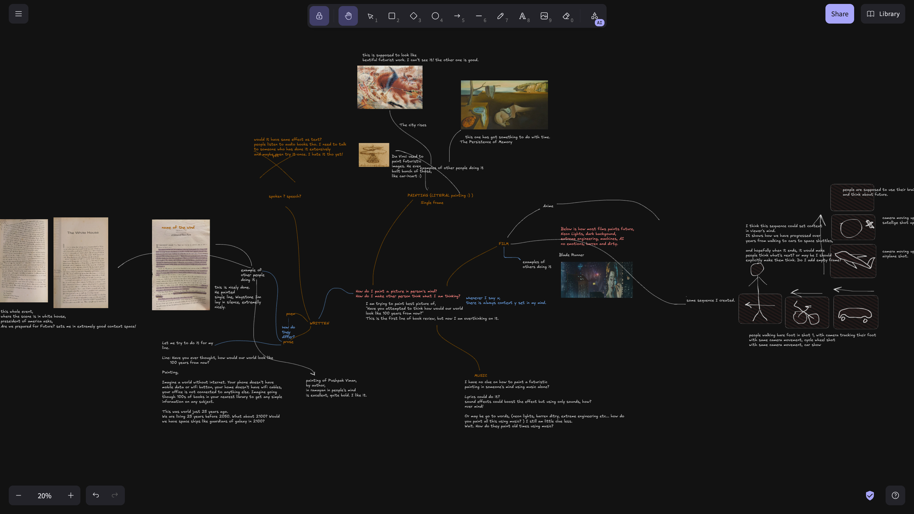

I wrote book review script of "The Extreme Future" (plan was to do video review but, I got stuck in some analysis) : https://docs.google.com/document/d/1IRGrcrjmcYHVc0f8aG6g4vAiOF22omzVm_sfUyczZTI/edit?usp=sharing
First line was supposed to go, "Have you attempted to think what would our world look like 100 years from now?"
I checked some different ways to better convery the line, in below.

back to it.
A world map, globe, picture of world on laptop, or (earth, moon, mars), or universe picture on laptop beside me.